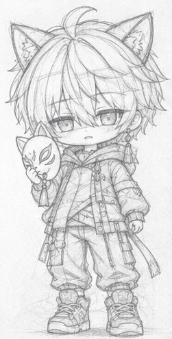
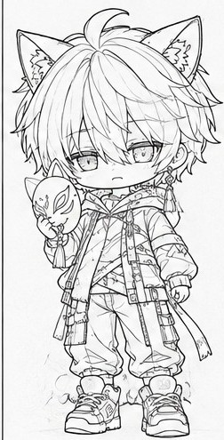
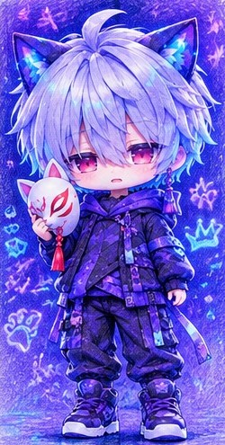
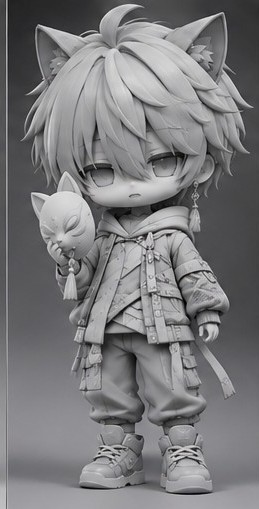
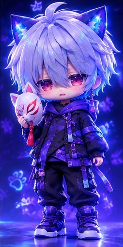

01. ラフスケッチ
頭身や全体のシルエット、ポーズを大まかに描き、キャラクターの方向性を決めます。
2種類のキャラクターデザインについて、それぞれ独立した工程として紹介します。ラフスケッチから形を整え、仕上げに至るまでの流れを段階ごとにまとめています。
手描きの線と色鉛筆らしい柔らかな質感を活かすイラスト制作の工程です。
線の表情や色の重なりを残し、手描きならではの温かみを持つ三面図としてまとめます。


頭身や全体のシルエット、ポーズを大まかに描き、キャラクターの方向性を決めます。

顔、髪、衣装、手足の位置やバランスを調整します。

輪郭や髪の束、衣装の境界、小物などの形を明確にします。

ベースカラーを重ね、色の濃淡や陰影を少しずつ加えます。

色の重なり、影、ハイライトを整え、手描きの風合いを残します。

正面・側面・背面の配置と余白を整え、完成資料にまとめます。
立体の形状を組み立て、マテリアルやライティングによって完成イメージを整える工程です。
立体感、表面の質感、青と紫を中心とした光の表現をまとめ、複数方向から確認できるデザイン資料にします。


シルエットと各パーツの大きさを決め、デザイン要素を整理します。

頭部、胴体、手足、髪、衣装などの基本形状を作ります。

髪の流れ、顔まわり、衣装や装飾などの細部を整えます。

パーツごとに色や表面の反射を設定し、素材感を調整します。

光源や背景、陰影を調整して立体感を引き出します。

三方向の形状や配色を確認し、完成資料にまとめます。
※このページは、掲載されている完成画像をもとに整理した制作工程の紹介です。実際に記録された作業ログや未公開の途中段階画像を示すものではありません。